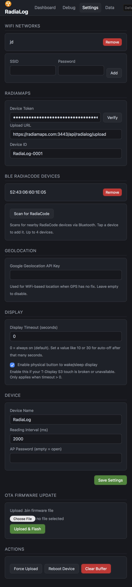
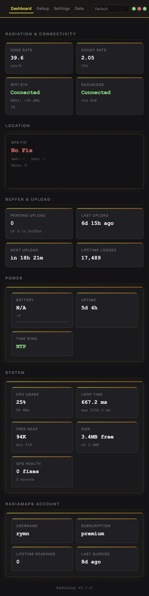

RadiaLog
RadiaLog reads your RadiaCode dosimeter, tags each measurement with GPS, and uploads to RadiaMaps so your readings appear on the world map. This guide walks you through first-time setup.
1 Wake the Device
Your RadiaLog ships in deep sleep to save battery. Press the restart button on the lid of the case to wake it up.
The device has two buttons: restart (on the lid, push with your finger) and boot (through a small hole on the side, needs a toothpick). You only need the restart button for setup.
2 Join the Setup WiFi
Wait ~5 seconds for the device to boot, then on your phone or laptop open WiFi settings and join the network named RadiaLog-XXXX (XXXX matches your device).
Password: radialog. Your phone may show "no internet" — that's expected.
3 Open the Setup Page
A captive portal usually opens automatically. If it doesn't, open a browser and visit:
http://10.0.0.1
Once on your home WiFi later, you can use http://radialog.local
4 Add Your Home WiFi
Tap Settings, then under WiFi Networks enter your home SSID and password and tap Add.

5 Get Your RadiaMaps Device Token
Sign in at radiamaps.com, then follow these three steps to generate a token:


Then in your RadiaLog: open Settings → RadiaMaps → Device Token, paste, and tap Verify. A green check confirms the link.
6 Pair Your RadiaCode
Power on your RadiaCode dosimeter. Then in Settings → BLE RadiaCode Devices tap Scan for RadiaCode and add your device.
7 Tap "Save Settings"
Scroll to the bottom of Settings and tap the green Save Settings button. The device joins your home WiFi and starts logging readings.
After saving, you'll lose the RadiaLog-XXXX network. Reconnect your phone to your home WiFi.
8 View Live Readings
From any device on your home network, open http://radialog.local to see live dose rate and counts. Visit radiamaps.com to see your map fill in.
Dashboard shows dose rate, count rate, WiFi/RadiaCode status, GPS fix, battery, and uptime at a glance.
